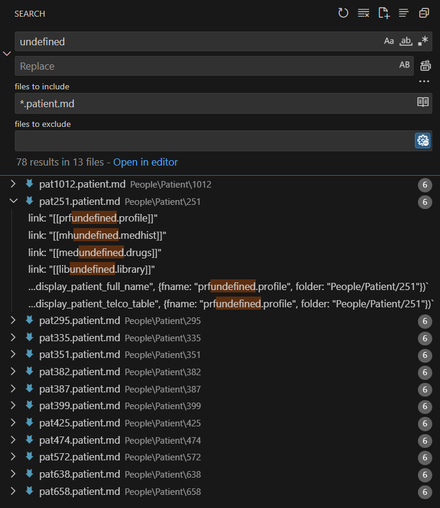

ToDo
Known Bugs
Patients that are created with the same name, surname, telephone number
Affects:: There are problems in queries that display patient encounters. That's because of duplicate consultation files that are created automatically based on name_surname_telephone of the patient e.g.
2024-06-15 ΑΓΑΘΑΓΓΕΛΟΣ_ΣΑΑΔΗΣ_6991234567 (1)

2024-06-15 ΑΓΑΘΑΓΓΕΛΟΣ_ΣΑΑΔΗΣ_6991234567 (1) 1
Search with Everything for (1) 1.md pattern.
A temporary fix is to delete those consultation files with that pattern.
Content inside patient folder files has dataview code and links with wrong filenames
Filenames in patient folder are created correctly
But content inside files has dataview code and links with wrong filenames e.g. prfundefined, mhundefined, medundefined, libundefined, prf638.patient

In generating 1036 patients there were 13 patient folders with that problem. This was probably due to the async-await calls that caused racing conditions on how each file is created and modified. The search was done inside VSCode.

The only fix currently is to delete such patient folders
Media files that are moved under patient's assets folder but not renamed
test and check this part of code in New.Document.tmpl
// for each new media file modify frontmatter
// by adding a new field to capture metadata properties of the media file
Urgent and Important (Do First)
- prevent creating duplicate patients with the same name, surname and telephone
- test scaling ability, how many patient records-files Obsidian Medilig can handle
Not Urgent but Important (Schedule)
Collaborative Simultaneous Work
More tests on having multiple Obsidian programs running and all of them opening and operating on the same Obsidian Medilig vault inside a shared network folder.
That method allows multiple users to work simultaneously. Each user can see different things and interact independently on vault files/notes. It is even possible to work on the same note, at the same time.
Current tests showed that this is doable but the client PC that opens the shared vault takes some time e.g. 30sec or more to load plugins and open it